동네 사랑방 같은 와인바.
La cremerie
La cremerie 라 크레므리 라는 이름을 가진 이곳은 이 전에 유제품을 판매하던 곳을 개조하여 와인바로 만든 곳입니다. 하지만, 이 전의 간판을 없애지 않고 그대로 사용하고 있죠.
이러한 곳을 파리에서 심심치 않게 찾아보실 수 있을 겁니다. 예를 들면 신발 수선집이라고 적혀있지만 그 안에서는 커피를 판다든지, 빵집이라고 적혀있지만 옷을 판매한다든지..
오후 그리고 저녁시간에 간단하게 와인 한 잔 곁들일 수 있는 작은 동네 사랑방 같은 느낌이 가득한 이곳을 소개해 드립니다.
아주 심플한 인테리어에 가운데에 떡하니 잠봉/소시지를 써는 빨간색 기계가 자리 잡고 있으며 양쪽으로는 와인이 이 공간을 가득 채우고 있습니다.
아주 멋있는 안경과 모자를 쓰신 할아버지께서 저희를 안내해 주십니다. 평일 점심시간이지만 이곳은 아주 조용합니다.
자리를 잡고 할아버지에게서 추천받은 와인을 주문하고, 와인과 함께 곁들일 메뉴도 두 가지 주문합니다. 브리타 치즈와 Charcuterie를 주문했습니다.
브리타 치즈는 모짜렐라와 크림으로 만든 이탈리아 치즈인데요. 절인 버섯, 절인 파, 올리브오일에 절여진 토마토, 엔다이브 등등 그 위에 함께 뿌려진 견과류까지! 와인과 함께 하기 너무나 좋은 메뉴 선택이었답니다.
그리고 다음 주문한 Charcuterie에는 말린 여러 햄 종류가 나왔습니다. 빵도 함께 나온답니다. 빵은 버터에도 찍어 드시고, 부리타 치즈 메뉴에 나오는 올리브오일에 찍어 드시기에도 딱 좋답니다.
아늑하고 조용한 분위기와 좋은 와인, 그리고 함께 어울리는 사람들이 좋으니 어느새 와인은 바닥이 보이기 시작합니다.
두 번째 와인 역시 할아버지의 추천으로 내츄럴 와인! (유기농 방식으로 재배한 포도에 인공적인 첨가물을 추가하지 않고 만든 와인)을 선택했답니다.
Odeon 오데옹 이 구역은 아주 많은 식당들이 즐비하고, 관광객 만큼 현지인들이 많이 찾는 곳이기도 합니다. 하지만 이곳 La cremerie에서만은 아주 조용하게 와인잔을 기울이며 시간을 보낼 수 있는 곳인 것 같습니다.
낮에도 좋지만, 밤에는 얼마나 더 분위기가 좋을까요?
낮이든, 밤이든 가볍게 와인 한 잔 기울이고 싶으시다면 이곳을 적극 추천해 드립니다.
La cremerie
주소 : 9 Rue des Quatre vents, 75006 paris
월 - 토요일 : 11:00 ~ 22:30
일요일 : 17:00 ~ 23:30
서울 한남동 이태원 핫플레이스 맛집 / 50개 종류의 셀프 생맥주 탭 맥주바 수제맥주 입문자 추천 :: 탭퍼블릭 ( tab public )
장도연 맥주 맛집 광화문 2호점
술의 맛을 이제 알아버린 오슬이가 적극 추천하는 술집이 있으니 바로 바로
이태원 한남동의 요즘 핫플레이스 :)
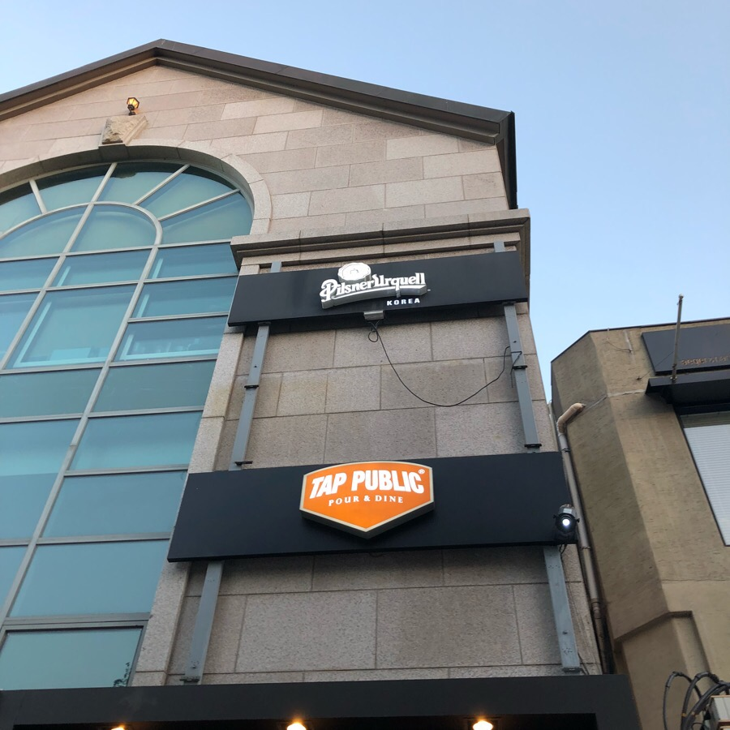
누구나 편하게 들려 원하는 맥주를 쉽게 마실 수 있는 맥주 입문자에게 추천하는 곳이다
이름하여 탭퍼블릭 !
탭퍼블릭은 제일기획에서 한강진쪽으로 가는 중간에 쉽게 발견할 수 있다!
한강진역으로 이어지는 큰 도로변에도 입구가 있다 :)
지하 2층이 바로 탭퍼블릭 tap public
생각보다 이른 시간에 간 편이라 사람들이 많이 없을 줄 알았지만,
앉자마자 30분이 지나니 몰려드는 사람들, 자리가 거의 없었다 !
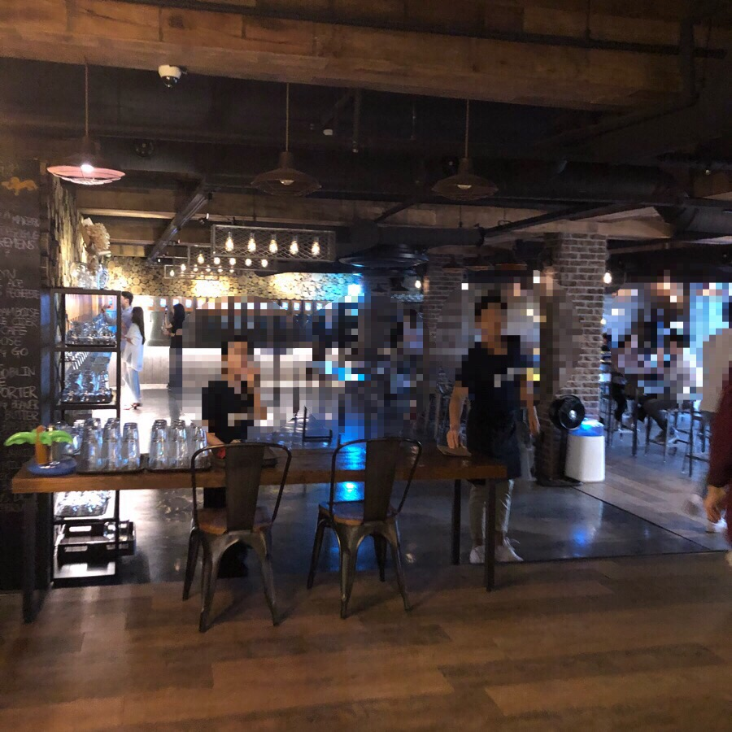
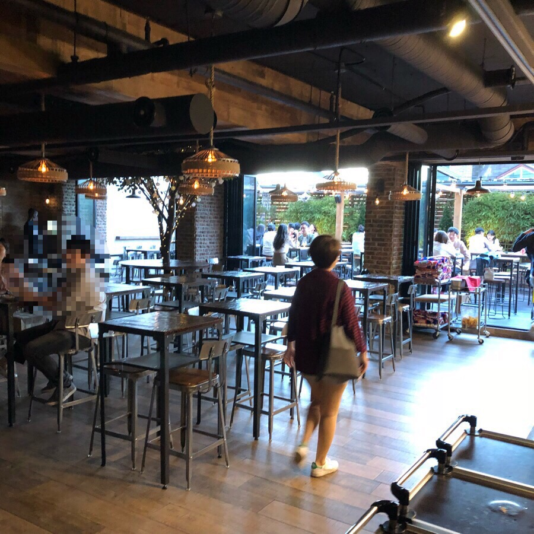
자 그럼 이 탭퍼블릭의 시스템을 소개한다 :)
우선 벽면을 따라 50여개의 생맥주 수도꼭지가 있다 :) 그래서 이 펍 이름도 탭 퍼블릭인듯 !
직원이 주진 않고 직접 원하는 맥주를 따라 먹으면 된다 !
계산이 신기한데
뭔가 찜질방처럼 탭 팔찌로 찍고 마시면 된다 :)
여러 맛을 맛볼 수 있는 수제 맥주 입문자에게 추천
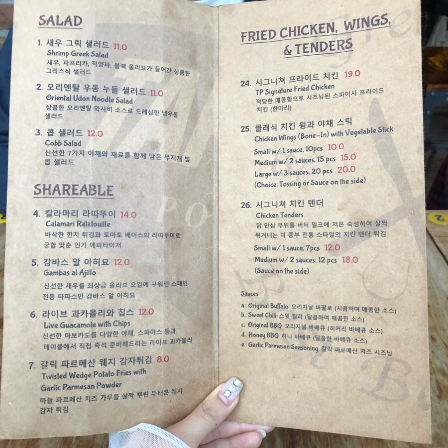
자리를 안내 받으면 바로 인원 수대로 전자 팔찌를 준다 :)
이태원 분위기 좋은 술집 오늘의 다양한 추천 안주 메뉴들 !
우리는 칠리 치즈 감자튀김을 먹었다 이건 항상 옳으니까:)
메뉴판은 1만원대가 더부분이다 :)
음식이 바로나오지는 않으니 맥주 먼저 마시러 !
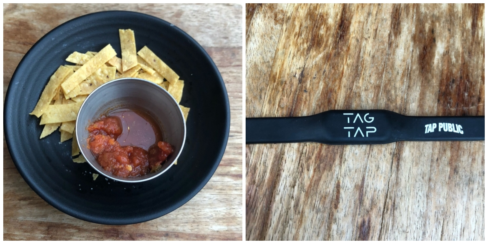
이게 바로 그 전자 팔찌이다 :)
이렇게 팔찌를 손목에 차고 이제 잔을 고르면 된다
처음에 가면 이렇게 기본 안주가 나온다
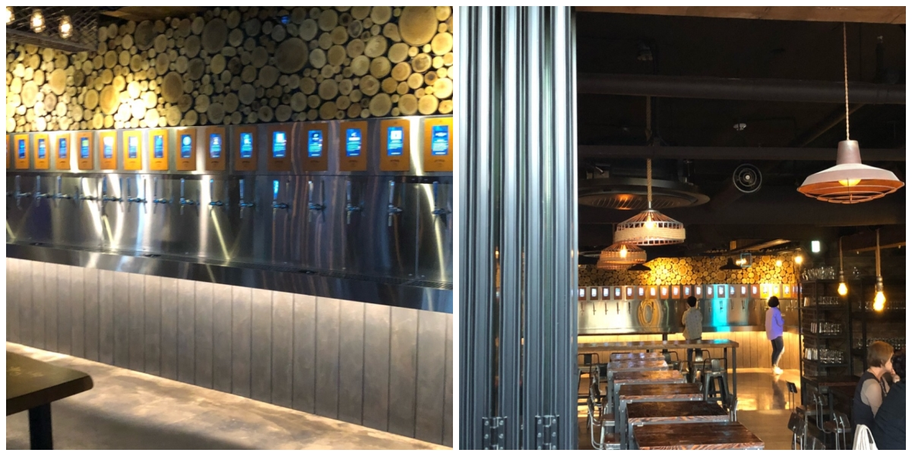
한남동 분위기 좋은 생맥주 펍에서 벽면으로 쭉 보이는 맥주들 :)
이태원에 이런 핫 플레이스가 있단걸 너무 늦게 알아버렸지만,
이제 자주 애용하는 이태원 술집이 될듯 !
장도연 맥주로 유명한 이곳 탭퍼블릭,
이번에 2호점 광화문에도 생겼다
왜 아산서원에 있을 때는 알지 못했던가
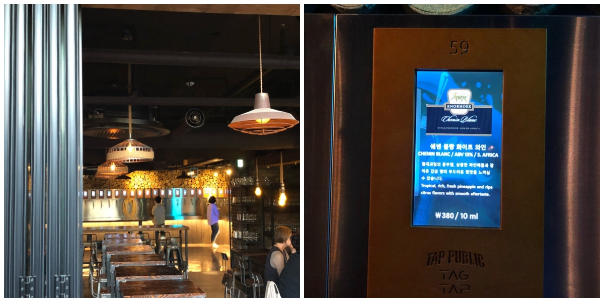
맥주 탭마다 이렇게 전자화면이 나온다
맥주에 대한 간략한 설명과 함께 :)
10ml당 가격이 나온다 !!
평소에 먹어보고 싶었던 맥주들,
하나하나 다 조금씩 마셔보는중
사실 계산해보면 절대 저렴한 가격은 아니다 !
그래도 다양한 맥주를 시도해볼 수 있다는 점에서 한남동 술집으로 추천
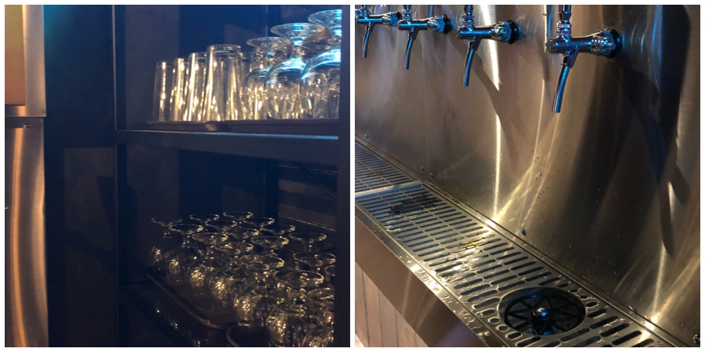
셀프 맥주는 팔찌를 탭하고 바로 따르면 된다
그만큼 가격이 올라간다 :)
아주 적은 양도 따를 수 있다는 사실 !
이렇게 먹은 잔은 오른쪽 하단처럼
바로 씻을 수 있다
이태원 새로운 맥주 투어를 위해 !
에일류 맥주들은 거품이 많이 나올 수 있으니 조심!
다마시고 유리잔 가져다대고 물이 나오면 세척하고 새로운 맥주 도전 !
나는 대부분 달콤한 맥주들을 마셨다 행복해 그래도 물론 내가 제일 좋아하는 맥주는 호가든 로제..
아직도 애기입맛
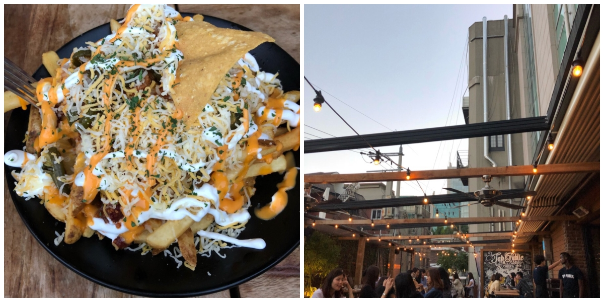
드디어 나온 탭퍼블릭 안주 감자튀김 :)
추천 메뉴로 제격이다 !
다음에는 과카몰리랑 마셔야겠다 :)
과카몰리는 아보카도를 잘게 부수어 양파나 토마토 소스등을 함께 버무린 멕시코 요리 :)
미국에서는 안주로 정말 자주 먹었던 것 같다 :) 간단한 맥주 안주로는 제격이지
신기한건 여기 탭퍼블릭에서는 생아보카도를 껍질부터 잘라서 만들어주신다고 :)
분위기가 정말 좋은 탭퍼블릭 :)
한남동 이태원 데이트코스로 제격이니,
앞으로 친구들에게 더더 추천해주어야겠다 !
나는 이렇게 좋은 사람들이랑 함께 온 것만으도 감사한걸
오늘 근데 네명이서 보았는데,
나와 오빠뺴고는 전부 여자친구 남자친구가 있더라구..!
(아냐 슬아 괜찮아)
사실 이제 무감각
이렇게 탭퍼블릭 마지막 사진을 끝으로 이태원 생맥주 셀프맥주 맛집 소개 끝 :)
주소는 서울 용산구 이태원로 244 탭퍼블릭
전화번호 : 02-797-4999
연중 무휴인듯
탭퍼블릭 이태원점
서울특별시 용산구 이태원로 244 트윈빌딩 L2
탭퍼블릭 이태원점 가는길 장소 위치는
오후 2:30 오픈하여 새벽 1시까지 !
다음에는 더 늦게와서 더 오랜 시간을 보내다가야겠다 :)
오랜만에 샤롯데드리머즈 언니 오빠들과 함께해서 행복한 시간이었다 !
홍대에서 찾은 분위기 좋은 와인바
얼마 전 홍대거리를 걷다가 분위기 좋은 와인바를 발견했어요.
제가 홍대에 일이 있어서 정기적으로 홍대에 방문했었거든요.
이 날따라 왠지 집에 가기 싫은거예요 ㅋㅋㅋ
방황했어요... 홍대에서 ㅎㅎ 원래 걷기를 좋아하기도 하지만요.
사람들 구경하면서 정처없이 걸었어요.
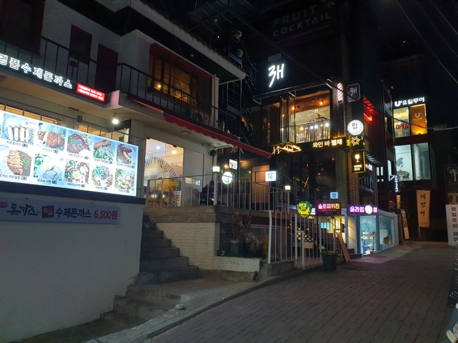
그렇게 혼자걷다가 안쪽 골목에서 발견한 곳인데요.
이름은 와인바 별채라는 곳이예요.
홍대입구역 8번출구에서 나오면 빠르게 찾아가실 수 있어요.
제가 정처없이 걷다가 들어간 곳이라서 역에서부터 시간은 정확히 모르겠어요 ㅎ
대략 10분정도면 도착할 수 있을 거 같아요.
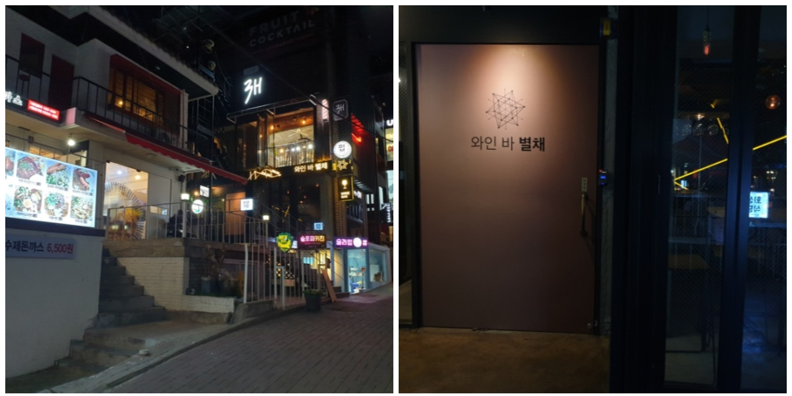
입구부터 너무 예쁘지 않나요?
문도 특이하게 열렸는데 제가 혼자 밀고 들어가서 사진은 못 찍었네요.
입구부터 디자인에 신경을 쓴 티가 확확 나더라구요.
홍대술집은 왠지 어린친구들이 놀아야 할 곳만 있는 줄 알았는데 이런 곳도 있네요!
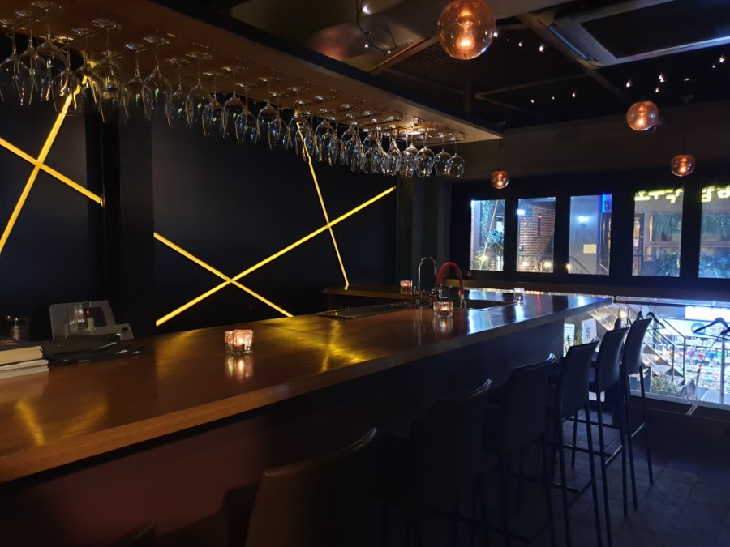
조금이른 시간에 방문해서 그런지 아직 사람이 없었어요.
제가 방문한 시간은 7시 조금 넘어서 였는데요. 9시 넘어가니 손님이 계속 들어오더라구요.
역시 분위기 좋은 홍대술집은 다들 알고 찾아오시나봐요.
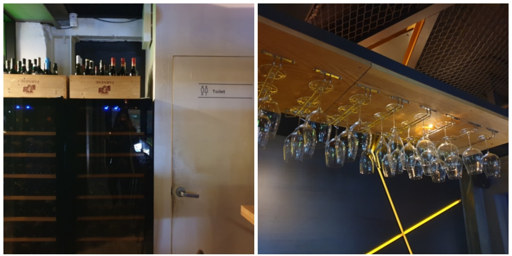
와인셀러도 있고, 와인잔이 천장에 인테이러처럼 보관되어 있었어요.
이런 거 괜히 욕심나요 ㅋㅋㅋ
왠지 집에 하나쯤은 갖고싶은 .... ㅎ 예쁜 거 다 좋아요.!!
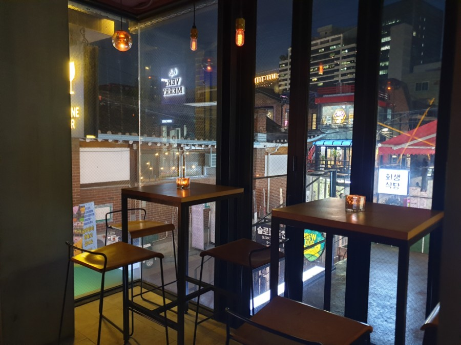
저는 바에 자리를 잡았는데요. 창가 쪽 테이블도 분위기가 너무 좋더라구요.
일행과 방문하면 창가쪽도 좋을 거 같아요 ^^
그런데 바에 앉아서 와인을 마시다보니 개인적으로는 바가 더 좋더라구요.
이유는 아래에서 천천히 설명해드릴게요!!
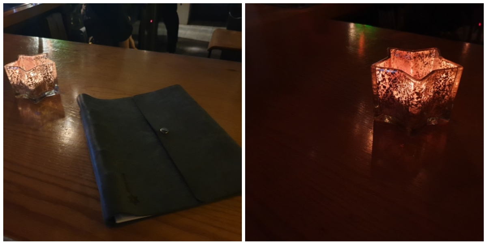
가성비 갑으로 즐기는 와인
메뉴를 받았어요~^^ 메뉴판도 고급진 ㅎㅎ
와인바 별채는 가성비가 좋은 와인바로 와인을 좋아하는 분들에게 이미 알려진 곳이더라구요.
다른 와인바보다 좋은 와인을 괜찮은 가격에 즐기실 수 있는 곳이예요.
잔 와인은 판매하지 않고 바틀로만 판매되고 있으니 참고해주세요!
그런데 바틀 가격이 진짜 다른 곳보다 저렴해요.
친구랑 홍대 와인바 잔으로 판매하는 곳 가서 그냥 그런 와인 먹는 거 보다 와인바 별채에서 바틀 한 병 먹는 게 진짜 더 이득이예요. 싸고 좋은 건 없다는 것이 제 생각인데요.
와인바 별채는 가성비 갑으로 너무 좋네요.
사장님이 홍대에서 장사하시면 서 미치셨나봐요 !!!
손님 입장에서는 넘 좋아요~~ㅎㅎ 좋은 와인 가성비 갑으로 먹을 수 있으니까요.
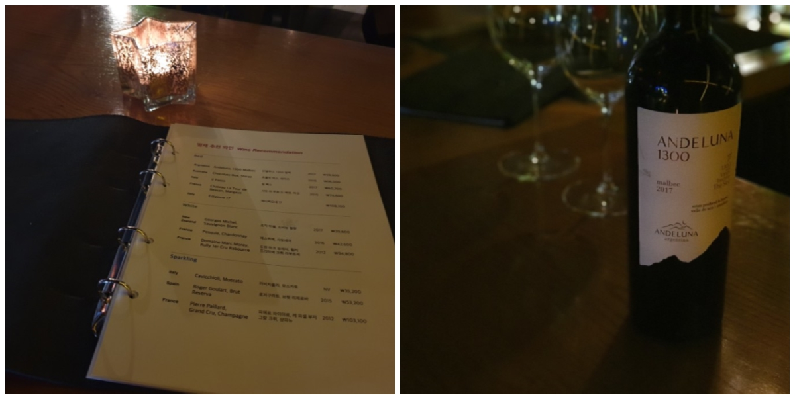
메뉴판 첫번째 페이지는 와인바 별채의 추천메뉴들이 있구요.
뒤에는 원산지별로 메뉴들이 쫘~악 있어요.
저는 와인에 대해서 많이 아는 편이 아니어서요.
추천 받아서 마셨어요.
제가 주문한 와인은 안델루나 1300이예요.
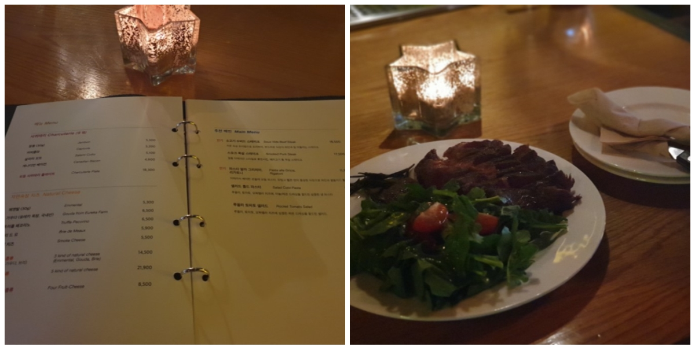
간단하게 먹을 수 있는 음식도 같이 주문했어요.
주문한 음식은 수비드 스테이크예요.
수비드는 물55도에 한시간 동안 익혀서 만드는 방식이래요.
질문하니 친절하게 설명해주셨어요~^^ 설명 듣고 바로 주문!! ㅋㅋ
수비드 방식으로 만든 스테이크는요.육즙이 그대로 보존되어 촉촉한 식감이 예술이래요.
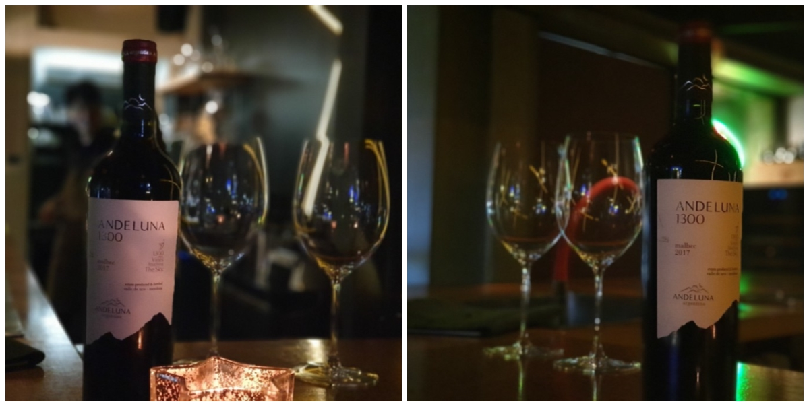
주문한 와인이 나왔어요!
오픈 전에 사진 찰칵찰칵~
안델루나 1300은 아르헨티나에서 말벡이라는 포도종으로 만든 와인으로 진하고 바디감있고 과실향이 나는 와인이라네요.
추천해주신 와인은 가격도 착하고 맛있게 먹었어요.
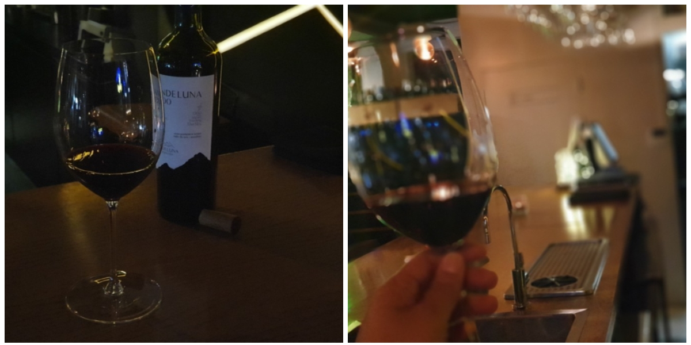
바디감이나 과실향을 제가 정확히 느끼지는 못했으나,
설명해주신 부분을 느끼면서 마시니 조금 더 와인을 즐길 수 있었어요.
바로 이 이유가 제가 바에 앉으면 좋다고 한 이유!! 흐흐흐흐흐
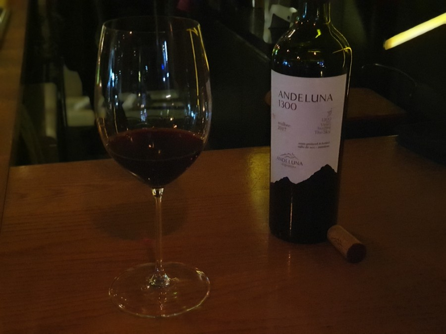
이야기도 도란도란하고 와인에 대한 설명도 들으면서 이 시간을 즐길 수 있었던 거 같아요.
와인바 별채에 앉아있으니까요.
뭔가 다른 공간에 와 있는 듯한 느낌을 받았어요.
하루하루 정신 없고 밖은 시끄러운 곳 투성인데요.
이곳에서는 걱정이 없고 와인에만 집중할 수 있는 분위기더라구요.
혼술 할 때면 나만의 시간을 즐겨도 좋구요.
옆에 앉은 손님과도 이야기할 수 있는 분위기더라구요.
서로 주문한 와이도 나눠마셨어요!!!
이건 .. 뭐 ... 방문하시는 상황에 따라 다를 수 있어요.
제가 방문했을 때는 진짜 좋은 분들만 오셨는지 :) 다들 너무 좋은 분들이었어요.
절대 헌팅하거나 그런 분위기 아니예요.
영화 심야식당 같은 와인바 별채예요. 실제도 단골들도 많다고 하더라구요.
제가 방문 했을 때도 단골분들이 많이 있었어요.
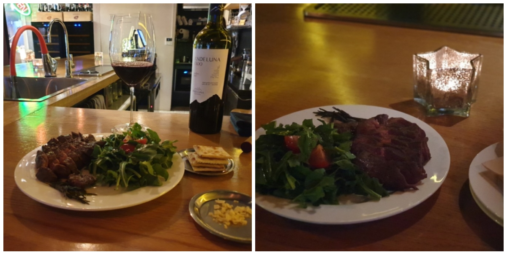
주문한스테이크도 맛있었어요.
소금을 조금 뿌려먹으면 진짜 짱맛!! 소금도 그냥 소금이 아니라고 설명해주셨는데,
이 부분은 제가 생각이 안나네요 ㅜㅜ
고기도 맛있는데 소금까지 맛있는 와인바 별채.
이른 저녁을 드셨다면 와인과 함께 스테이크를 즐겨보시는 것도 좋을 거 같아요.
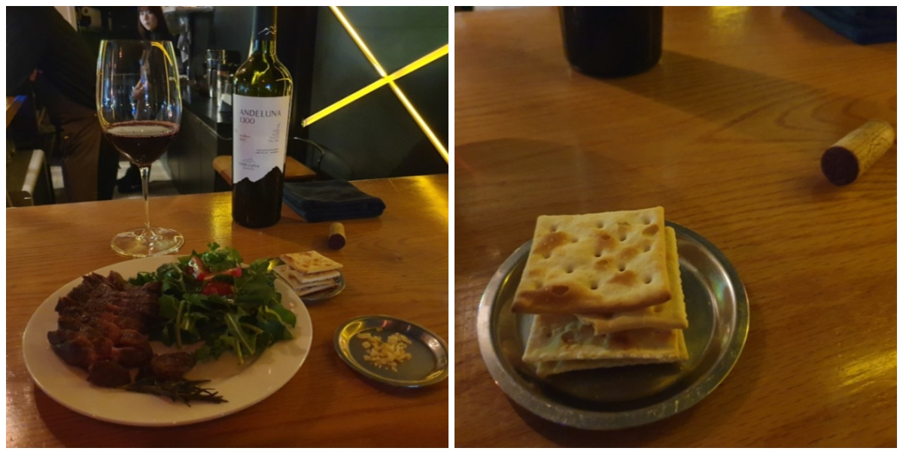
와인병은 점점 비워져 가는데 이 비워져 가는 와인병이 야속하더라구요.
계속 앉아서 즐기고 싶은데 와인병이 너무 빨리 비워지는 거 같아요.
혼자 드실 때 한 병이 너무 많다고 하면 어떤 와인은 하프로 판매하는 것도 있었어요.
그런데 하프로는 와인바 별채에서 너무 아쉬울걸요?
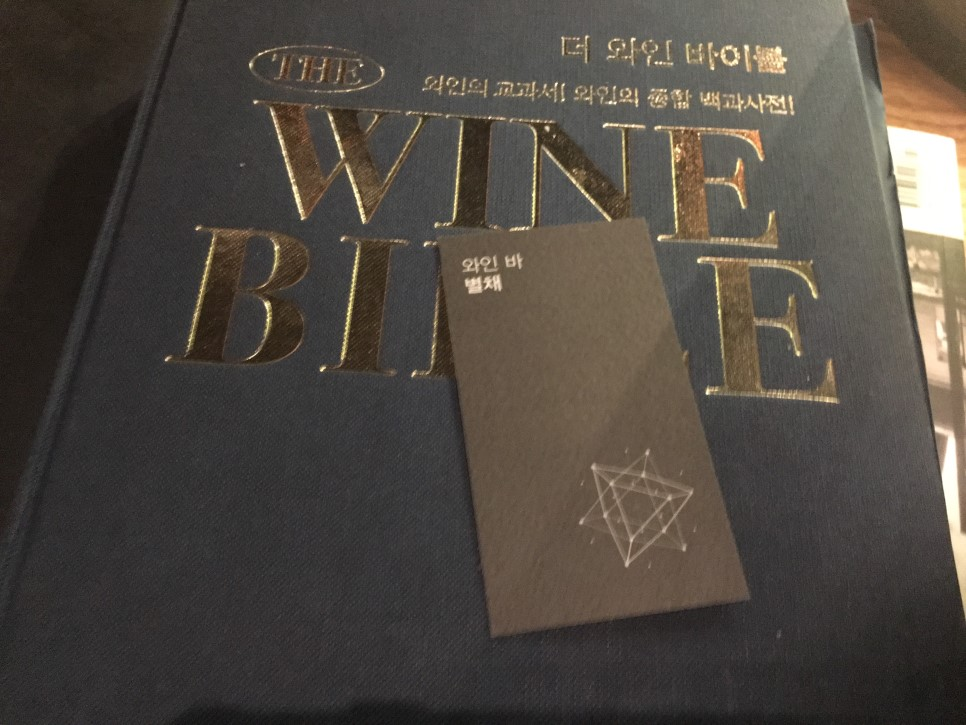
나오면서 명함도 같이 챙겨왔어용!
담에는 친구들하고 같이 방문해봐야겠어요.
주말에는 전화 한 번 해보고 방문하시는 것도 좋을 거 같아요.
제가 좋아하는 바 자리는 금방 찬다구요! ㅎㅎ


 이러한 곳을 파리에서 심심치 않게 찾아보실 수 있을 겁니다. 예를 들면 신발 수선집이라고 적혀있지만 그 안에서는 커피를 판다든지, 빵집이라고 적혀있지만 옷을 판매한다든지..
이러한 곳을 파리에서 심심치 않게 찾아보실 수 있을 겁니다. 예를 들면 신발 수선집이라고 적혀있지만 그 안에서는 커피를 판다든지, 빵집이라고 적혀있지만 옷을 판매한다든지..
 오후 그리고 저녁시간에 간단하게 와인 한 잔 곁들일 수 있는 작은 동네 사랑방 같은 느낌이 가득한 이곳을 소개해 드립니다.
오후 그리고 저녁시간에 간단하게 와인 한 잔 곁들일 수 있는 작은 동네 사랑방 같은 느낌이 가득한 이곳을 소개해 드립니다.


 아주 심플한 인테리어에 가운데에 떡하니 잠봉/소시지를 써는 빨간색 기계가 자리 잡고 있으며 양쪽으로는 와인이 이 공간을 가득 채우고 있습니다.
아주 심플한 인테리어에 가운데에 떡하니 잠봉/소시지를 써는 빨간색 기계가 자리 잡고 있으며 양쪽으로는 와인이 이 공간을 가득 채우고 있습니다.
 아주 멋있는 안경과 모자를 쓰신 할아버지께서 저희를 안내해 주십니다. 평일 점심시간이지만 이곳은 아주 조용합니다.
아주 멋있는 안경과 모자를 쓰신 할아버지께서 저희를 안내해 주십니다. 평일 점심시간이지만 이곳은 아주 조용합니다.
 자리를 잡고 할아버지에게서 추천받은 와인을 주문하고, 와인과 함께 곁들일 메뉴도 두 가지 주문합니다. 브리타 치즈와 Charcuterie를 주문했습니다.
자리를 잡고 할아버지에게서 추천받은 와인을 주문하고, 와인과 함께 곁들일 메뉴도 두 가지 주문합니다. 브리타 치즈와 Charcuterie를 주문했습니다.
 브리타 치즈는 모짜렐라와 크림으로 만든 이탈리아 치즈인데요. 절인 버섯, 절인 파, 올리브오일에 절여진 토마토, 엔다이브 등등 그 위에 함께 뿌려진 견과류까지! 와인과 함께 하기 너무나 좋은 메뉴 선택이었답니다.
브리타 치즈는 모짜렐라와 크림으로 만든 이탈리아 치즈인데요. 절인 버섯, 절인 파, 올리브오일에 절여진 토마토, 엔다이브 등등 그 위에 함께 뿌려진 견과류까지! 와인과 함께 하기 너무나 좋은 메뉴 선택이었답니다.
 그리고 다음 주문한 Charcuterie에는 말린 여러 햄 종류가 나왔습니다. 빵도 함께 나온답니다. 빵은 버터에도 찍어 드시고, 부리타 치즈 메뉴에 나오는 올리브오일에 찍어 드시기에도 딱 좋답니다.
그리고 다음 주문한 Charcuterie에는 말린 여러 햄 종류가 나왔습니다. 빵도 함께 나온답니다. 빵은 버터에도 찍어 드시고, 부리타 치즈 메뉴에 나오는 올리브오일에 찍어 드시기에도 딱 좋답니다.

 아늑하고 조용한 분위기와 좋은 와인, 그리고 함께 어울리는 사람들이 좋으니 어느새 와인은 바닥이 보이기 시작합니다.
아늑하고 조용한 분위기와 좋은 와인, 그리고 함께 어울리는 사람들이 좋으니 어느새 와인은 바닥이 보이기 시작합니다.
 두 번째 와인 역시 할아버지의 추천으로 내츄럴 와인! (유기농 방식으로 재배한 포도에 인공적인 첨가물을 추가하지 않고 만든 와인)을 선택했답니다.
두 번째 와인 역시 할아버지의 추천으로 내츄럴 와인! (유기농 방식으로 재배한 포도에 인공적인 첨가물을 추가하지 않고 만든 와인)을 선택했답니다.
 Odeon 오데옹 이 구역은 아주 많은 식당들이 즐비하고, 관광객 만큼 현지인들이 많이 찾는 곳이기도 합니다. 하지만 이곳 La cremerie에서만은 아주 조용하게 와인잔을 기울이며 시간을 보낼 수 있는 곳인 것 같습니다.
낮에도 좋지만, 밤에는 얼마나 더 분위기가 좋을까요?
낮이든, 밤이든 가볍게 와인 한 잔 기울이고 싶으시다면 이곳을 적극 추천해 드립니다.
La cremerie
주소 : 9 Rue des Quatre vents, 75006 paris
월 - 토요일 : 11:00 ~ 22:30
일요일 : 17:00 ~ 23:30
Odeon 오데옹 이 구역은 아주 많은 식당들이 즐비하고, 관광객 만큼 현지인들이 많이 찾는 곳이기도 합니다. 하지만 이곳 La cremerie에서만은 아주 조용하게 와인잔을 기울이며 시간을 보낼 수 있는 곳인 것 같습니다.
낮에도 좋지만, 밤에는 얼마나 더 분위기가 좋을까요?
낮이든, 밤이든 가볍게 와인 한 잔 기울이고 싶으시다면 이곳을 적극 추천해 드립니다.
La cremerie
주소 : 9 Rue des Quatre vents, 75006 paris
월 - 토요일 : 11:00 ~ 22:30
일요일 : 17:00 ~ 23:30